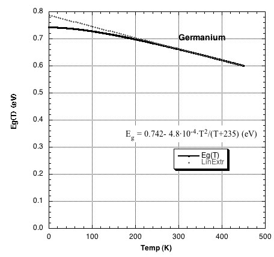

8 Appendix 3: Temperature dependence of \(E_g\)
Experimental results consistently shows that the energy gap depends on temperature and for Germanium we can find in the literature the following empirical law:
\[\begin{equation} E_{ g }(T)=0.742-\frac { 4.8\cdot 10^{ -4 }T^{ 2 } }{ T+235 } \quad \quad [eV] \tag{8.1} \end{equation}\]This may be approximated, in the high temperature region, by a linear law as follows:
\[E_g (T) = A \cdot BT\]
where the constants \(A\) is the value of \(E_g\) linearly extrapolated to \(T=0\): \[E^0_g = A = 0.78eV\]
Since in the intrinsic region (high temperature) the resistance depends on the absolute temperature \(T\) as \(exp( \frac{E_G}{2kT})\), a plot of \(ln( R )\) vs \(\frac{1}{2 K T}\) using a linear approximation for \(E_g(T)\) results in a straight line with slope \(E^0_g\)

Figure 8.1: Temperature dependance of the energy gap